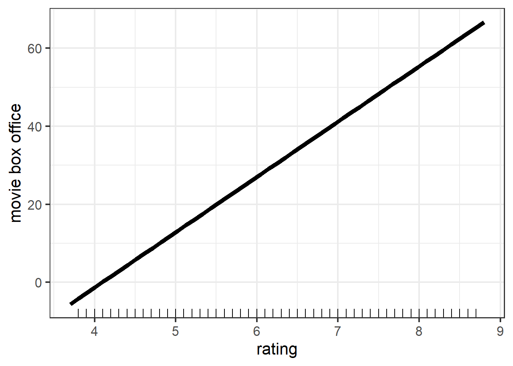
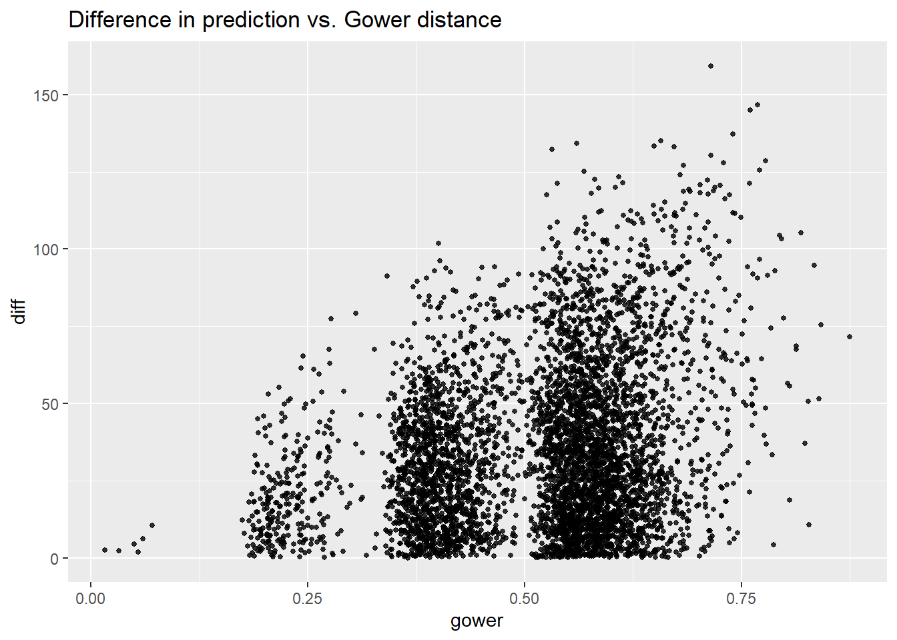

Chapter 3 Linear Regression
3.1 Model Fitting
3.1.1 Model Summary
##
## Call:
## lm(formula = gross ~ year + certificate + runtime + genre + rating,
## data = train_dat)
##
## Residuals:
## Min 1Q Median 3Q Max
## -290.69 -26.08 -7.30 13.03 830.52
##
## Coefficients:
## Estimate Std. Error t value Pr(>|t|)
## (Intercept) -137.85487 8.63938 -15.957 < 2e-16 ***
## year1970 -3.87542 9.42478 -0.411 0.680935
## year1971 -2.80330 9.59515 -0.292 0.770169
## year1972 -15.06170 9.16267 -1.644 0.100234
## year1973 -13.95687 9.26134 -1.507 0.131828
## year1974 -14.56539 9.15107 -1.592 0.111480
## year1975 -3.12536 10.39778 -0.301 0.763739
## year1977 3.97240 10.57808 0.376 0.707270
## year1978 2.84313 10.60215 0.268 0.788575
## year1979 -0.18021 10.51887 -0.017 0.986332
## year1980 10.64177 9.70045 1.097 0.272640
## year1981 5.10760 9.21075 0.555 0.579226
## year1982 2.59656 9.11590 0.285 0.775771
## year1983 6.98645 9.09738 0.768 0.442520
## year1984 2.61209 8.92271 0.293 0.769719
## year1985 -7.95517 8.70555 -0.914 0.360833
## year1986 3.19815 8.58474 0.373 0.709496
## year1987 1.02436 8.51156 0.120 0.904208
## year1988 5.22470 8.50893 0.614 0.539207
## year1989 8.44815 8.55863 0.987 0.323612
## year1990 11.29015 8.54004 1.322 0.186178
## year1991 10.18008 8.63533 1.179 0.238460
## year1992 13.53419 8.53408 1.586 0.112781
## year1993 11.16539 8.55122 1.306 0.191670
## year1994 9.06280 8.46649 1.070 0.284441
## year1995 11.86080 8.45463 1.403 0.160672
## year1996 13.81837 8.45351 1.635 0.102145
## year1997 11.76002 8.36493 1.406 0.159781
## year1998 16.74185 8.36450 2.002 0.045351 *
## year1999 25.37426 8.43803 3.007 0.002641 **
## year2000 16.93140 8.32003 2.035 0.041865 *
## year2001 16.10946 8.32936 1.934 0.053123 .
## year2002 19.23010 8.31165 2.314 0.020700 *
## year2003 19.19027 8.35074 2.298 0.021572 *
## year2004 14.76399 8.29930 1.779 0.075267 .
## year2005 20.32833 8.29115 2.452 0.014224 *
## year2006 15.37888 8.25290 1.863 0.062416 .
## year2007 18.86797 8.25311 2.286 0.022257 *
## year2008 19.56242 8.26219 2.368 0.017910 *
## year2009 18.49899 8.27099 2.237 0.025325 *
## year2010 26.46834 8.28003 3.197 0.001393 **
## year2011 20.30902 8.26150 2.458 0.013971 *
## year2012 22.47593 8.27189 2.717 0.006592 **
## year2013 20.29357 8.22216 2.468 0.013591 *
## year2014 18.74780 8.22410 2.280 0.022643 *
## year2015 18.31896 8.21495 2.230 0.025764 *
## year2016 19.67048 8.19812 2.399 0.016433 *
## year2017 24.85789 8.18792 3.036 0.002402 **
## year2018 17.58427 8.18299 2.149 0.031658 *
## year2019 40.61469 8.41087 4.829 1.39e-06 ***
## year2020 4.74310 10.18953 0.465 0.641588
## year2021 40.70115 9.51255 4.279 1.89e-05 ***
## yearOther 5.95449 8.00326 0.744 0.456882
## certificateOther 22.60671 1.88203 12.012 < 2e-16 ***
## certificatePG 58.25183 1.84888 31.507 < 2e-16 ***
## certificatePG-13 61.69036 1.69226 36.454 < 2e-16 ***
## certificateR 25.36004 1.58204 16.030 < 2e-16 ***
## runtime 0.38742 0.02071 18.711 < 2e-16 ***
## genreAdult -10.91955 31.37147 -0.348 0.727790
## genreAdventure -9.65920 1.71302 -5.639 1.74e-08 ***
## genreAnimation 13.72542 1.81341 7.569 3.96e-14 ***
## genreBiography -38.84403 2.99654 -12.963 < 2e-16 ***
## genreComedy -21.43946 1.29996 -16.492 < 2e-16 ***
## genreCrime -22.64123 1.54289 -14.675 < 2e-16 ***
## genreDrama -29.53421 1.36724 -21.601 < 2e-16 ***
## genreFamily -19.61369 9.28584 -2.112 0.034683 *
## genreFantasy -7.60225 4.68469 -1.623 0.104654
## genreFilm-Noir -36.21209 24.33484 -1.488 0.136750
## genreHistory -23.66423 27.16556 -0.871 0.383706
## genreHorror -0.57666 2.11120 -0.273 0.784748
## genreMusic -22.32211 54.34872 -0.411 0.681283
## genreMusical -17.40108 16.40813 -1.061 0.288925
## genreMystery -24.14321 6.29763 -3.834 0.000127 ***
## genreRomance -37.53941 8.73826 -4.296 1.75e-05 ***
## genreSci-Fi -28.84733 20.54008 -1.404 0.160206
## genreThriller -13.24588 7.31069 -1.812 0.070027 .
## genreWar -48.76727 54.31289 -0.898 0.369254
## rating 14.16936 0.45469 31.163 < 2e-16 ***
## ---
## Signif. codes: 0 '***' 0.001 '**' 0.01 '*' 0.05 '.' 0.1 ' ' 1
##
## Residual standard error: 54.24 on 16749 degrees of freedom
## Multiple R-squared: 0.2614, Adjusted R-squared: 0.258
## F-statistic: 76.97 on 77 and 16749 DF, p-value: < 2.2e-16We can read from the summary of the linear model that the R-squared of our model on the training set is only 0.2614, which indicates a very bad fit. To further examine whether the linearity assumption is hold, we draw the residual plot as following.
3.1.2 Check Linearity
From the Residual Plot, we can observe that majority points are lying in a line with negative slope. This might indicate that our model will over-estimate certain types movies’ box office and under-estimate some other types. That is, some common characteristics of data with high fitted value contributes a lot to its over all prediction and vice versa for data with low predicted value.
Also note that we have negative fitted value, which obviously
does not make sense in reality. By checking the dataset, we have no negative values in gross variable. This excludes the possibility that negative fitted values come from dataset. Hence, this is another factor supporting that a linear model might not be appropriate.
3.2 Model Evaluation
## MSE MAE R-Squared
## 1 2726.577 31.71711 0.2759302The evaluation table shows the MSE, MAE, and R-Squared value of our model on the test set. All of three criterion indicate that our model had a bad performance. Hence, from the aspect of accuracy, linear model should not be our target model.
3.3 Model Interpretation
3.3.1 Partial Dependence Plot
Next, we want to explore the marginal effect of rating, runtime, certificate, and genre on predicted value.


Note that the PDP of rating and rutime are both straight line, this is because in linear model, the relationship between response and each feature is linear. We can also see that both variables have positive marginal effect on gross. However, the range of movie box office in two figures are different, rating results in a larger variation in terms of predicted value. This suggests that rating could explain more variation of movie box office. Therefore, rating should be a more important feature compared with runtime. And this is consistent with our intuition.
The PDP of certificate shows that PG-13 and PG movies tend to have more box office while Not Rated movies tend to have less box office. This is consistent with the results in scatter plot of box office Vs certificate.
The PDP of genre shows that animation, action, and horror movies are top three most popular types while war, film-noir, and biography are the three types with least audience.
3.3.2 Local Interpretable Model-agnostic Explanations (LIME)
Because of the high interpretability of linear model, LIME features plots seem to be redundant. But I want to see whether the results obtained from local interpretable model is consistent with the ordinary linear model.
| model_intercept | model_prediction | feature | feature_value | feature_weight | feature_desc | prediction |
|---|---|---|---|---|---|---|
| 93.333 | 45.399 | year | 27 | -2.133 | year = 1996 | 43.805 |
| 93.333 | 45.399 | certificate | 3 | 27.663 | certificate = PG | 43.805 |
| 93.333 | 45.399 | runtime | 100 | -58.298 | runtime <= 232 | 43.805 |
| 93.333 | 45.399 | genre | 1 | 16.098 | genre = Action | 43.805 |
| 93.333 | 45.399 | rating | 5 | -31.264 | 3.27 < rating <= 5.25 | 43.805 |

From the explanation table, we have that the local model for case 3649 is \(\hat{y}_{lime} = 93.333 -31.264 \cdot \mathbf{1}_{3.27 < rating <= 5.25}+27.663 \cdot \mathbf{1}_{certificate = PG}+16.098 \cdot \mathbf{1}_{genre = Action}-58.298 \cdot \mathbf{1}_{runtime <= 232}-2.133 \cdot \mathbf{1}_{year = 1996}\). And note that in our original model, the coefficient of certificatePG is 58.252, genreAction is baseline and the coefficient of most levels are negative, the coefficient of year1996 is 13.818, the coefficient of rating is 14.169, and the coefficient of runtime is 0.387. Thus, the local (linear) model is different from our original linear model from quantitative aspect. However, from the LIME plot, in terms of direction, the effect of certificate and genre are both consistent with results from original model. Hence from this respect, the local model has same output as original linear model.
## lime error original error
## 1 -42.78843 -16.20443
## 2 118.21543 102.77843
## 3 -28.09811 -26.50411
## 4 -13.22456 2.63944The residual table gives the residual of local model and original model on the 4 data points used in LIME. We can see that our ordinary linear model outperforms the local model. I think this may be related to the motivation of using lime, that is, we want to add interpretability of our original model, which in exchange, sacrificed some accuracy. To be more specific, by using lime, we create some fake data points around the data point that we want to predict, and we also used a black box model to estimate those fake points. Hence, those two steps might be the reason why we get an even worse prediction than ordinary linear model does. However, linear model is already highly interpretable, we might only need assistance of lime for less interpretable models.
3.3.2.1 Gower Distance

As Gower distance increases, the variance of difference between pairs increases. This indicates that: for very different observations, our model sometimes makes very different predictions and sometimes makes similar predictions; for very similar observations, our model tend to consistently make similar predictions. From the figure, we can claim that for our linear model, if the Gower distance is less than 0.18, the prediction will be very similar (difference<25).
3.3.3 Shapley Additive Explanations
For linear model, the shapley value of each feature is merely its coefficient. Hence, we do not need this technique to help interpret the model.
3.3.4 Feature Importance
The Feature Importance plot shows the relative importance of each feature fed into our linear model. Surprisingly, the most important feature is certificate instead of rating this is different from conclusion derived from partial dependence plot, that is rating is the most important feature as rating caused the most variation in response variable.